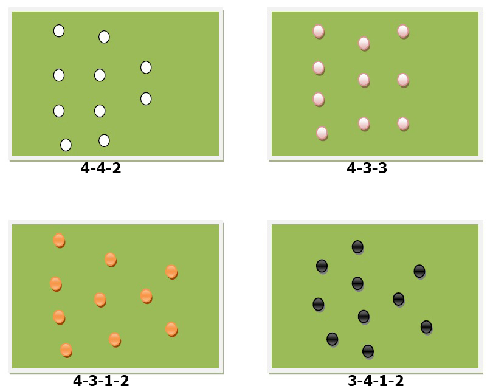

Táctica de equipo
Nombraremos las posiciones de juego según la numeración clásica que se emplea en el fútbol para esos puestos:
1- Golero o arquero.
2- Defensa central derecho, o back derecho.
3- Defensa central izquierdo o back izquierdo.
4- Lateral derecho.
5- Volante central, también llamado “cinco” como su numeración habitual.
6- Lateral izquierdo.
7- Puntero derecho.
8- Volante derecho.
9- Delantero central.
10- Volante izquierdo.
11- Puntero izquierdo.
Algunas de las formaciones más comunes empleadas por los entrenadores y sus equipos son:
- 4-4-2 4 en el fondo, 4 volantes y 2 delanteros o puntas.
- 4-3-3 4 defensas, 3 volantes o medios y 3 puntas o delanteros.
- 4-3-1-2 4 defensores, 3 volantes, un “enganche” y 2 puntas o delanteros.
- 3-4-1-2 3 defensores, 4 volantes (2 centrales y 2 carrileros), un “enganche” y 2 delanteros.
